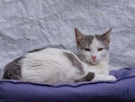

Original Image
Click to open the image in each format:
This page demonstrates how images behave in digital environments. It shows how file formats, image dimensions, file size, proportional resizing, improper distortion, and enlargement affect the way images appear on a web page.
I chose this Pexels image because it has clear detail in the cat's fur, eyes, whiskers, and background fabric. The image is titled "Peaceful White and Gray Cat Resting Outdoors" and was photographed by Engin Akyurt. The original JPG image is 2048 by 1536 pixels.
Click to open the image in each format:
This example displays the cat image smaller with inline CSS while preserving proportions.
This image was resized in an image editor before being placed on the page. The image file itself is smaller, and the proportions remain correct.
These examples intentionally distort the properly reduced image by changing one dimension while keeping the other dimension fixed.
These two images are displayed at the same size, but the second image started as a much smaller file. Enlarging the smaller file causes visible quality loss.

I took this photo to demonstrate image proportions using a round object. The image shows my hand holding a round Blistex lip balm cap. I chose this because the cap should remain circular when the image is displayed correctly. The original JPG image is 1536 by 2048 pixels.

Click to open the image in each format:
This example displays the personal image smaller with inline CSS while preserving proportions.
This image was resized in an image editor before being placed on the page. The image file is smaller, and the Blistex cap remains circular.
These examples intentionally distort the properly reduced image by changing one dimension while keeping the other dimension fixed. The round Blistex cap makes the distortion easier to notice.
These two images are displayed at the same size, but the second image started as a much smaller file. Enlarging the smaller file makes it lower quality.

I used ChatGPT to explain the assignment requirements, answer questions about the different image tasks, troubleshoot image resizing in macOS Preview, and help identify and fix the image optimization errors reported by Accumulus.
The biggest challenge was creating all of the required image versions and making sure they were actually resized in pixels instead of just changing their display size. I learned the difference between resizing an image with CSS and permanently resizing the image itself in an image editor, and how that affects page performance and validation.
{kind=link}
{kind=link}
{kind=link}
{kind=link}
{kind=link}
{kind=link}
{kind=link}
{kind=link}